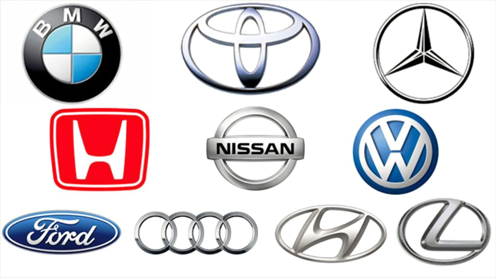
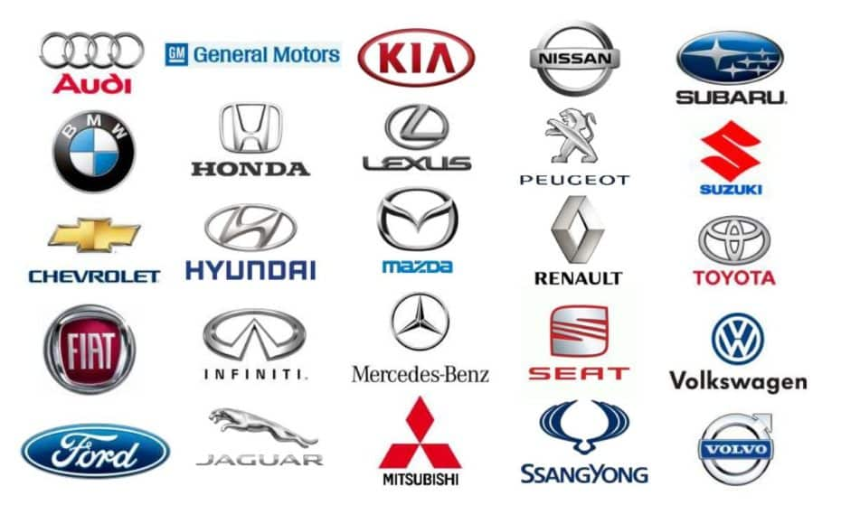
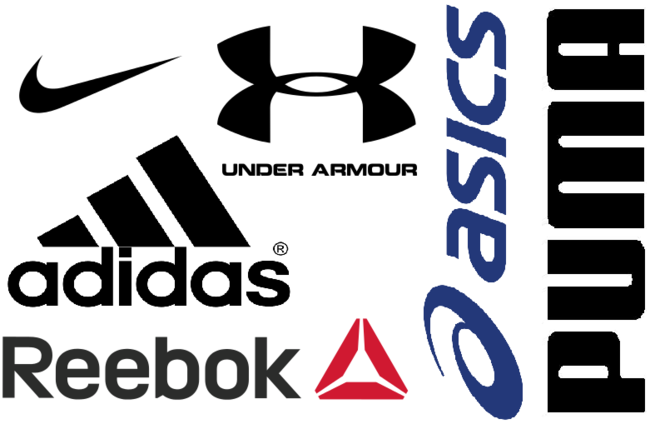
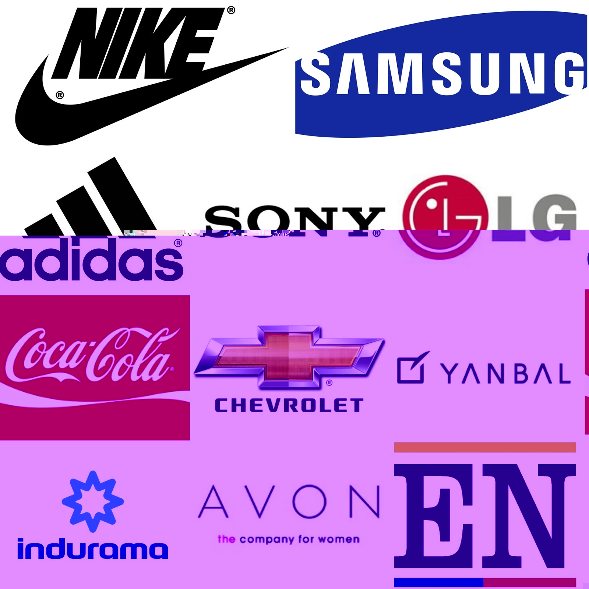

Listas desordenadas
La principal diferencia entre estas y
las ordenadas es que no llevan un orden.
Marcas de autos
- Toyota
- Chevrolet
- Nissan
- Mazda
- Volkswagen

Autos de gama alta
- Porsche
- Ferrari
- Lamborghini
- Challenger
- Camaro

Marcas de motocicletas
- Kawasaki
- Harley
- Ducati
- Yamaha
- Honda
Marcas de ropa deportiva
- Puma
- Nike
- Adidas
- Fila
- Vans

Marcas
- Netflix
- Google
- YouTube
- Lenovo
- Samsung
